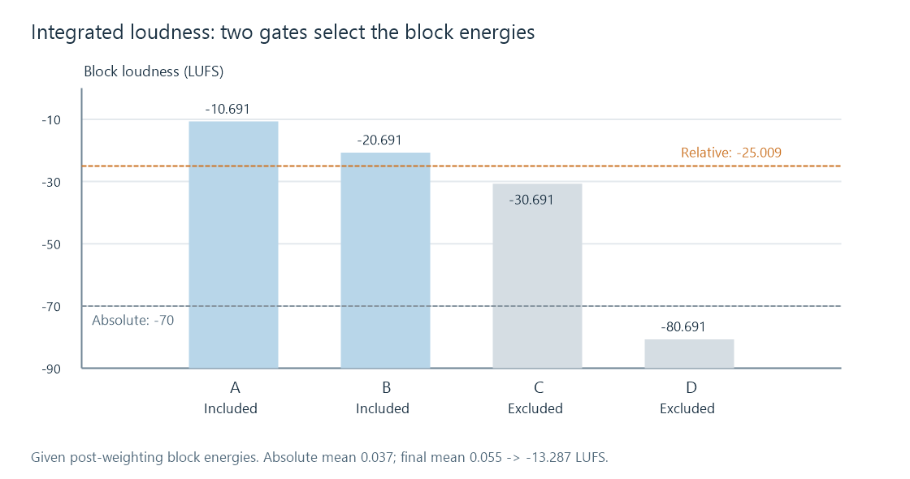
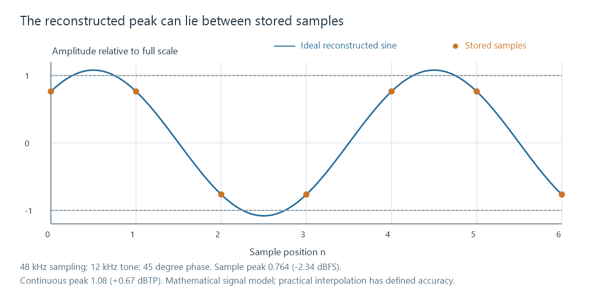

LUFS loudness measurement
LUFS expresses standardized programme loudness using frequency weighting, channel energy, measurement windows, and level gating.
LUFS means Loudness Units relative to Full Scale. It expresses a digital audio programme's loudness using a specified measurement method. LKFS, the term used in ITU-R BS.1770, describes the equivalent scale. A change of 1 LU corresponds to a change of 1 dB in the measured loudness level.
For example, −18 LUFS is 5 LU above −23 LUFS. Under ordinary conditions, applying −5 dB of constant gain brings that programme close to −23 LUFS. The number is a programme-level reference, not the sound pressure at the listener's seat.
A LUFS meter is doing more than averaging waveform height. Its operations explain why two tools need to agree on measurement mode, channel interpretation and programme boundaries before their results can be compared.
Filtering and combining channel energy
ITU-R BS.1770 applies K weighting before measuring mean squared signal energy. Its two filter stages alter the contribution of different frequencies: a shelving stage models part of the head's acoustic effect, followed by a high-pass weighting stage. These are measurement filters; measuring a file does not apply their sound to the file being played.
For the conventional layout with front left, front right, centre and two surround channels, the channel energies are then summed with defined weights. The three front channels have weight 1; the surrounds have weight 1.41, about +1.5 dB in power. The LFE channel is excluded from this loudness calculation. That exclusion does not remove bass from playback. Larger layouts and object-based material require the corresponding extensions of the recommendation rather than applying this five-channel table indiscriminately.
For one block, the basic level calculation is:
L = −0.691 + 10 log10(E)
E = sum of the weighted mean-square channel energies
The calibration constant is part of the specified method. A generic RMS reading without K weighting and channel weighting cannot simply be relabeled LUFS.
Channel count changes the summed energy
Take a block whose post-filter energy is 0.01 in just the centre channel. With weight 1, E is 0.01 and its level is −20.691 LUFS.
Now suppose the same energy is present in both front left and front right. The sum is 0.02, giving −17.681 LUFS, approximately 3.01 LU higher. This follows from doubling power, not from adding two amplitude waveforms into one channel.
For one conventional surround channel with energy 0.01, the weight 1.41 gives E = 0.0141 and a level of approximately −19.199 LUFS. These examples concern one measurement block before integrated gating. They show why channel roles and layout must be known rather than inferred from channel count alone.
A meter combines measured channel energies; a stereo downmix combines the signals themselves before measuring them. In-phase components can reinforce in a mix and opposite-phase components can cancel. That is another reason a multichannel LUFS reading cannot simply be assigned to its stereo conversion.
Integrated loudness uses two gates
A whole movie can contain very quiet passages, music, dialogue and long intervals near silence. If every second contributed equally to an ungated average, extending a silent ending could substantially lower the result without making the audible scenes quieter.
The integrated measurement evaluates 400 ms blocks, with 75% overlap, so a new block begins every 100 ms. It excludes blocks below an absolute threshold of −70 LKFS. It then calculates an energy mean from the surviving blocks and sets a relative threshold 10 LU below that intermediate level. The final result averages the blocks above both thresholds.
The arithmetic averages energies, then converts the mean to a logarithmic level. Averaging decibel numbers would produce a different answer.
Four block energies, step by step
To make the gates visible, take four illustrative block energies after frequency and channel weighting. This example starts at the energy stage; it is not a simulated PCM recording or a meter compliance test.
| Block | Weighted energy | Block loudness | Absolute gate | Final relative gate |
|---|---|---|---|---|
| A | 0.1 | −10.691 LUFS | Included | Included |
| B | 0.01 | −20.691 LUFS | Included | Included |
| C | 0.001 | −30.691 LUFS | Included | Excluded |
| D | 0.00000001 | −80.691 LUFS | Excluded | Excluded |
The absolute gate leaves A, B and C. Their mean energy is:
(0.1 + 0.01 + 0.001) / 3 = 0.037
intermediate level = −0.691 + 10 log10(0.037) ≈ −15.009 LUFS
relative threshold = −15.009 − 10 ≈ −25.009 LUFS
C is below that relative threshold. A and B remain, with mean energy (0.1 + 0.01)/2 = 0.055. The final integrated value is therefore approximately −13.287 LUFS.

An arithmetic average of A and B's decibel readings would be −15.691 LUFS, which is not the correct energy average. The louder block contributes considerably more energy.
The relative gate is based on the absolute-gated intermediate result. It is not an endlessly repeated procedure that keeps recalculating the threshold until no more blocks disappear.
Three time views of the programme
An EBU Mode meter provides several readings using the same underlying loudness framework:
| Reading | Time basis | Useful question |
|---|---|---|
| Momentary, M | 400 ms | How strong is this brief phrase or event? |
| Short-term, S | 3 s | How is a scene or musical passage developing? |
| Integrated, I | The selected measurement interval, with level gating | What is the overall programme loudness? |
A whole-file integrated value and an integrated value reset halfway through the file are measurements of different intervals. Momentary and short-term readings do not apply the integrated measurement's two-gate procedure.
For an Emby playback investigation, measure the actual stream being compared. A downmix, alternate audio track, or processed transcode may differ from the source's original multichannel programme. A file's recorded analysis value also cannot reveal a later device volume adjustment.
True peak measures another property
Samples describe a band-limited waveform at discrete instants. The reconstructed waveform can reach a larger value between those instants. A true-peak meter estimates that behavior by interpolation.

The figure uses an ideal 12 kHz sine sampled at 48 kHz, with continuous peak amplitude 1.08 and a 45-degree sampling phase. Its stored magnitudes are about 0.764, or −2.34 dBFS sample peak. Its continuous peak is +0.67 dBTP. This is a mathematical illustration; practical meters have defined interpolation accuracy and practical converters have their own reconstruction behavior.